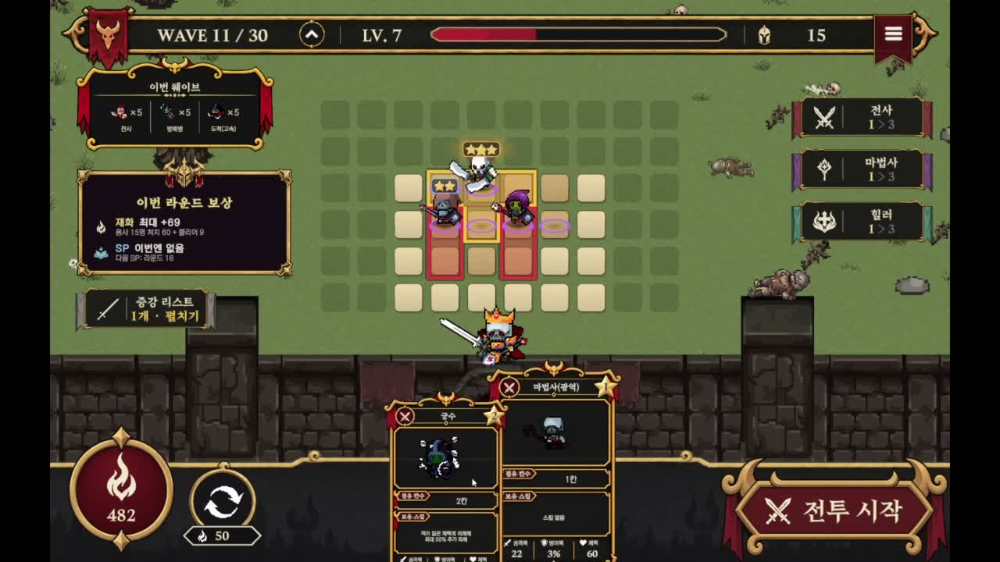

GRID DEFENSE · WINDOWSSTOVE 심사 접수 · 심사 대기
용사때문에 레벨업
2026.09.02 ~ 2026.10.14
넥스트러너스 재직 중 참여한 프로젝트입니다. 준비·전투·보상·재도전 코어루프와 그리드 배치를 담당하고, 팀원의 전투·UI 시스템을 연결했습니다.
- 런·보상 요청 ID로 단계 전환 검증
- 결과 상태와 팝업·입력 차단 동기화
ENTRY-LEVEL UNITY CLIENT PORTFOLIO
Unity 팀 프로젝트에서 맡은 기능을 구현하고, 프레임 사이의 입력·런타임 참조·비동기 생명주기·UI 동기화처럼 눈에 보이는 증상 뒤의 상태 흐름을 다시 검토한 신입 클라이언트 개발자입니다.
PROJECT
PROJECT SNAPSHOT
신입 지원자로서 출시 수치보다 프로젝트의 규모, 담당 범위, 현재 확인 가능한 코드와 영상을 먼저 제시합니다.

GRID DEFENSE · WINDOWSSTOVE 심사 접수 · 심사 대기
2026.09.02 ~ 2026.10.14
넥스트러너스 재직 중 참여한 프로젝트입니다. 준비·전투·보상·재도전 코어루프와 그리드 배치를 담당하고, 팀원의 전투·UI 시스템을 연결했습니다.
 3D ACTION · WINDOWS
3D ACTION · WINDOWS
2인 팀 · 4주
적 행동, 아이템·버프 데이터, 구역별 Addressables 생성과 피드백 연출을 담당했습니다.
 SIMULATION · WINDOWS
SIMULATION · WINDOWS
01
STATE FAILURE INDEX
프로젝트 이름보다 오류가 발생한 경계를 기준으로 사례를 다시 묶었습니다. 각 사례는 증상, 상태 흐름, 변경 지점, 재검증 자료 순서로 확인할 수 있습니다.
02
VERIFICATION RULE
AI가 제안한 코드든 직접 작성한 코드든 바로 결과로 주장하지 않습니다. 증상을 다시 만들고, 상태가 바뀌는 지점을 찾고, 변경 범위를 제한한 뒤 같은 조건에서 확인합니다.
입력, 실행 경로, 빌드와 상태값을 기록해 같은 증상을 다시 만들 수 있는지 확인합니다.
누가 값을 만들고, 어느 객체가 참조하며, 프레임과 생명주기 경계에서 무엇이 끊기는지 추적합니다.
테스트·영상·Git 기록으로 확인한 결과와 아직 측정하지 않은 성능 효과를 분리합니다.
코드 비교, 변경 기록, 실행 영상 또는 회귀 테스트로 확인할 수 없는 내용은 대표 성과에서 제외했습니다.
확인된 기술 범위Unity / C# / async·CancellationToken / UGUI / Grid / ScriptableObject / Behavior Tree / Addressables
03
PROJECTS
넥스트러너스 재직 중 참여 · 백팩형 그리드 디펜스 로그라이크
코어루프 · 그리드 배치 · 보상 처리 · 결과 UI 연동
개발 기간
2026.09.02 ~ 2026.10.14
2026.10.22 기준 · 이용등급·빌드 심사를 접수하고 심사 시작을 기다리고 있습니다.
유닛을 배치·합성해 용사 웨이브를 방어하는 게임입니다. 준비에서 전투, 보상과 재도전까지 이어지는 흐름을 담당했습니다. 게임 규칙·데이터·화면을 분리하고 팀원이 개발한 전투·스킬·증강 시스템을 인터페이스로 연결했습니다.
준비·전투·보상·UI가 각자 진행되면 지급이 끝나기 전에 다음 라운드가 시작되거나 이전 결과창이 남을 수 있습니다.
팀원의 전투와 UI 구현을 유지하면서, 취소·패배·재도전 경로에서도 현재 실행의 상태만 반영해야 했습니다.
일반 C# 클래스인 StageManager가 진행 순서를 제어하고, 인터페이스로 전투·보상·준비를 연결했습니다. RunId와 요청 ID를 확인하고 단계 완료를 기다린 뒤 전환합니다.
CORE LOOP · RESPONSIBILITY
점유·연결 조건 검증
배치 스냅샷 생성
팀 전투 시스템 호출
종료·취소·정리 대기
요청 ID 확인
실제 지급 완료 대기
일반 승리 → 다음 준비
최종 승리·패배 → 결과
보스 웨이브는 일반 보상 후 증강 선택을 연결합니다. 최종 결과에서 재도전하면 새 RunId로 시작합니다. 최종 승리·패배는 전투 결과에 따라 최종 결과 단계로 분기합니다.
IMPLEMENTATION DEBUGGING
패배 후 재도전하면 새 게임은 시작됐지만 이전 결과 팝업이 남았습니다.
팝업 닫기가 UI Bridge의 RetryResult 버튼 경로에만 있었습니다. 더미 UI에서 Bootstrap을 직접 호출하면 닫기 처리를 거치지 않았습니다.
결과 데이터가 해제될 때 승리·패배 팝업을 정리하도록 옮겼습니다. 결과 위에 메뉴가 열려 있어도 해당 결과창만 제거하고, 입력 차단과 포커스 기록을 함께 갱신했습니다.
직접 Retry, 메뉴가 열린 상태의 Retry, 잘못된 RunId, 중복 닫기와 초기화 실패를 확인했습니다. 재도전 요청 거절 시에는 기존 결과창을 유지합니다.
UIInGameBattleBridge.cs · 2026.10.06 담당 커밋 발췌
if (result == null ||
!_bootstrap.TryRetryResult(result.RunId))
return false;
CloseResultPopupIfTop();
return true;if (result == null)
{
_shownResultRunId = null;
_popupController?.CloseResolvedPopup(
_victoryPopup);
_popupController?.CloseResolvedPopup(
_defeatPopup);
return;
}같은 메서드의 전후 비교가 아니라, 버튼 경로에서 제거한 처리와 결과 갱신 경로에 추가한 처리를 비교한 발췌입니다. CloseResolvedPopup은 팝업 목록·입력 차단·선택 복원 정보를 함께 정리합니다.
DESIGN DECISIONS
보관함 공간이 부족하면 카드 선택만으로 보상을 완료할 수 없습니다. 공간 확보와 실제 지급이 끝날 때까지 다음 준비 단계를 열지 않도록 구성했습니다.
실행 중 요청 검증 범위입니다. 강제 종료 후 보상 복원과 계정 단위 트랜잭션은 이 구현의 성과에 포함하지 않습니다.
보상 설계·연동 근거 ↗준비 단계의 그리드는 배치 규칙을 검사하고, 전투가 시작될 때 GridDeploymentSnapshot을 전달합니다. 화면과 전투가 같은 편집 상태를 임의로 수정하지 않도록 역할을 나눴습니다.
성급별 콘텐츠와 전투 유닛 구현은 팀과 연동했습니다. 알고리즘 사용 자체를 성능 개선 수치로 주장하지 않습니다.
배치 스냅샷·단계 검증 코드 ↗2인 팀 · 4주 · 3D 액션
Behavior Tree · 데이터 구조 · 구역별 로드 · 피드백 연출
2026.05.28 — 06.24
완료
Behavior Tree로 적 행동을 노드 단위로 나누고, 던전 진입 시 전체 몬스터를 생성하던 구조를 문 트리거 기반 Addressables 비동기 로드 방식으로 변경한 프로젝트입니다.
던전 진입 시 몬스터가 함께 생성되고, 적 행동 규칙과 수치 조정 지점이 기능별로 흩어져 있었습니다.
2인·4주 프로젝트에서 기존 AI 패키지와 Unity 생명주기를 고려하며 담당 범위 안에서 구조를 변경해야 했습니다.
행동을 노드와 데이터로 분리하고 로드 시점을 문 상호작용으로 늦췄습니다. 성능 효과는 Baseline 측정 전까지 결과로 단정하지 않았습니다.
IMPLEMENTATION DEBUGGING
Blackboard 값이 갱신되지 않아 공격 쿨타임이 무시됐습니다.
노드가 런타임 Agent가 아닌 직렬화 값을 참조했습니다.
Agent의 Blackboard를 직접 조회하도록 변경했습니다.
동일 전투를 반복해 설정한 공격 주기를 확인했습니다.
CheckCooldownCondition.cs · Unity Version Control · /main/develop/Geon · Changeset 74 → 164
if (lastAttackTime == null || cooldown == null)
return false;
return Time.time - lastAttackTime.Value
>= cooldown.Value;float lastTime = lastAttackTime.Value;
float coolTime = cooldown.Value;
var bAgent = GameObject.GetComponent<
Unity.Behavior.BehaviorGraphAgent>();
if (bAgent != null &&
bAgent.BlackboardReference != null)
{
bAgent.BlackboardReference.GetVariableValue(
lastAttackTime.Name, out lastTime);
bAgent.BlackboardReference.GetVariableValue(
cooldown.Name, out coolTime);
}
return Time.time - lastTime >= coolTime;외부 Behavior 패키지는 수정하지 않고, 조건 노드가 실제 Agent의 BlackboardReference에서 같은 이름의 값을 읽도록 변경했습니다.
오브젝트 비활성화로 코루틴과 생성 과정이 중단됐습니다.
Addressables 완료 전에 오브젝트 생명주기가 끝났습니다.
표시 제어와 생성 로직을 분리하고 중복 실행을 막았습니다.
동일 진입 경로에서 생성 완료를 확인했습니다.
DungeonDoor.cs · Unity Version Control · Changeset 168 최초 반영 코드
// 재현 흐름을 단순화한 의사 코드
StartCoroutine(SpawnEnemiesCoroutine());
gameObject.SetActive(false);
// 비활성화된 MonoBehaviour의
// 대기 중 코루틴이 중단됨isOpened = true;
HideDoor();
StartCoroutine(SpawnEnemiesCoroutine());
private void HideDoor()
{
Renderer[] renderers =
GetComponentsInChildren<Renderer>();
foreach (var r in renderers)
r.enabled = false;
Collider[] colliders =
GetComponentsInChildren<Collider>();
foreach (var c in colliders)
c.enabled = false;
}
// SpawnEnemiesCoroutine 마지막
gameObject.SetActive(false);이 파일은 최초 저장된 Changeset 168부터 수정 형태로 포함되어 있습니다. 왼쪽은 과거 리비전이 아니라 확인한 오류 흐름을 단순화한 의사 코드입니다.
Scriptable Object·Observer Pattern, Behavior Tree, Addressables 비동기 스폰, 동적 UI, 제단 연출과 Audio Ducking 구현을 확인할 수 있습니다.
영상의 성능 관련 설명은 구조 변경 의도입니다. 개선 수치는 Baseline 측정 후 보완할 예정입니다.
5인 팀 · 6주 · 방치형 시뮬레이션
건설 입력 · 배치 피드백 · HUD · 공용 Prefab 연결
2026.07 — 08
완료
차량 이동 → 코인 획득 → 건물 해금 → 도시 확장으로 이어지는 방치형 도시 건설 시뮬레이션입니다. 건설 입력, 배치 상태 Ghost, UI Raycast, HUD와 공용 Prefab 연결을 담당했습니다.
빠른 드래그에서 도로가 끊기고 오래된 입력 요청이 쌓였으며, 배치 가능 여부를 클릭 전에 판단하기 어려웠습니다.
5인 팀의 공용 Canvas·Prefab·건설 데이터와 연결하면서 기존 기능의 입력 흐름을 유지해야 했습니다.
입력 위치 보간과 오래된 요청 폐기를 적용하고, 초록·빨강 Ghost로 클릭 전 배치 가능 여부를 표시했습니다.
IMPLEMENTATION DEBUGGING
빠른 드래그에서 중간 셀이 누락되어 도로가 끊겼습니다.
프레임 사이의 그리드 셀을 검사하지 않았습니다.
경로를 보간하고 오래된 건설 요청을 제거했습니다.
도로 연결과 UI 위 입력 차단을 확인했습니다.
PlacementController.cs · GitHub PR #253 ↗ · base ce714d2 → merge d456474 ↗
Vector2Int cursor = from;
while (cursor.x != to.x)
{
cursor.x += Math.Sign(to.x - cursor.x);
TryPlaceDragTile(cursor);
}
while (cursor.y != to.y)
{
cursor.y += Math.Sign(to.y - cursor.y);
TryPlaceDragTile(cursor);
}Vector2Int cursor =
_currentType == TileType.Road &&
_roadStrokeLastAcceptedCoord.HasValue
? _roadStrokeLastAcceptedCoord.Value
: from;
while (cursor.x != to.x)
{
cursor.x += Math.Sign(to.x - cursor.x);
if (!EnqueuePlacement(cursor,
ResolvePlacementDirection(cursor),
notifyOnRejected: false))
return;
}RoadStrokeRelease_DrainsEveryAcceptedTileInOrder
드래그가 끝난 뒤 승인된 (0, 0)~(0, 3) 좌표가 순서대로 처리되는 시나리오를 추가했습니다. PR 기록상 전체 .NET build는 기존 DOTween 참조 오류로 완료하지 못해, 해당 제한도 함께 남겼습니다.
TTS 음성을 제거하고 기존 화면 자막은 유지한 포트폴리오용 편집본입니다.
04
CLIENT STATE LAB
장르와 기능은 달랐지만 문제는 같은 질문으로 모였습니다. 상태의 주인은 누구인지, 실행은 어디서 끊기는지, 프레임 사이에 무엇이 사라지는지를 확인했습니다.
설정값과 런타임 값이 함께 존재할 때 실제 행동을 결정하는 기준점을 하나로 좁힙니다.
Blackboard 사례 보기 ↗비동기 작업을 시작한 객체의 활성 상태와 완료 시점을 분리해 실행 흐름이 끊기지 않게 합니다.
Addressables 사례 보기 ↗프레임마다 관찰된 지점만 처리하지 않고, 이전 상태와 현재 상태 사이의 누락 구간을 복원합니다.
드래그 입력 사례 보기 ↗버튼마다 화면을 닫는 대신, 게임의 결과 상태가 해제되는 시점에 팝업·입력 차단·포커스를 함께 동기화합니다.
재도전 결과 UI 사례 보기 ↗MMORPG CLIENT CONNECTION
네트워크 구현 경험을 성과로 주장하는 항목이 아닙니다. 현재 확인한 클라이언트 상태 관리 경험을 바탕으로 확장해 학습하는 영역입니다.
05
AI-ASSISTED DEVELOPMENT
프로젝트 구현 과정에서 AI 개발 도구를 적극 활용했습니다. 현재는 AI 사용 자체를 역량으로 내세우기보다, 대표 사례의 호출 흐름·상태 변화·수정 이유를 다시 검토해 설명 가능한 지식으로 전환하고 있습니다.
증상과 기대 결과를 구분합니다.
변경 대상과 위험 범위를 먼저 확인합니다.
AI로 관련 코드, 대안과 테스트 초안을 찾습니다.
diff, 실행 흐름과 제한 사항을 다시 확인합니다.
변경 이유와 검증 결과를 추적 가능하게 남깁니다.
DIRECT REVIEW
AI ASSISTANCE
AI 사용량 자체를 성과로 주장하지 않습니다. 이 페이지의 대표 사례는 현재 코드 흐름과 근거를 다시 확인한 범위이며, 아직 설명하거나 검증하지 못한 기능은 핵심 사례에서 제외합니다.
KNOWLEDGE TRANSFER
입력과 이벤트가 시작되는 메서드를 확인합니다.
객체별 책임과 변경되는 값을 흐름도로 정리합니다.
같은 조건에서 증상과 수정 결과를 확인합니다.
수정 이유, 대안과 남은 한계를 코드 기준으로 말합니다.
06
BACKGROUND
재직 기간에 「용사때문에 레벨업」 개발에 참여했습니다. 코어루프·그리드 배치·일반 보상·결과 및 재도전 연결을 담당했습니다.
담당 프로젝트와 구현 근거 보기 ↗ENTRY-LEVEL GROWTH
프로젝트 코드를 다시 읽으며 OOP의 책임 분리와 의존 관계를 정리합니다.
호출 스택, 상태값과 재현 조건을 확인하고 작은 변경을 직접 검증합니다.
현재 상태 관리 경험을 패킷 순서와 클라이언트·서버 동기화의 기본 개념으로 확장합니다.
CONTACT